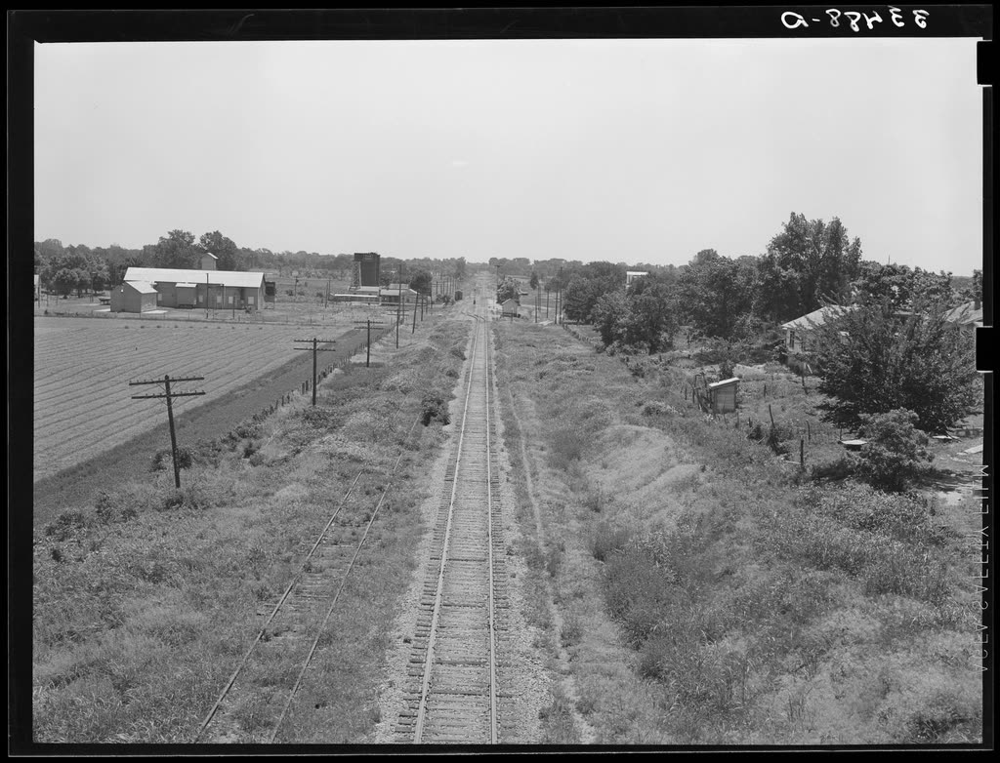

About Us
East Side Free Will Baptist Church has served Muldrow and the surrounding countryside for generations — a country church with a long memory and an open door.
Visiting for the first time
The first visit is the hardest part, so here is what actually happens on a Sunday morning.
- Where we are — 613 E Sequoyah St, Muldrow, OK 74948, a block east of the main road through town.
- Parking — [Parking is available in the lot beside the church. Confirm the arrangement before this goes live.]
- What to wear — [Come as you are. Most folks dress comfortably.]
- Children — [Sunday school classes at 9:30 AM for all ages; nursery provided during the 10:30 AM service. Confirm exact ages and the check-in process.]
- The service — [Traditional worship, preaching from the Bible, roughly an hour. Confirm length and the order of service.]
- Accessibility — [Confirm wheelchair access, hearing assistance, and large-print materials.]
Our pastor
Pastor Anthony Williams has served as pastor here for many years — he was already presiding at services in Muldrow by 2012, and he has baptised, married, and buried much of this community since.
[A few sentences in his own words: how he came to East Side, what he loves about this church, and a word of welcome to a visitor. A photograph here helps a great deal — people want to know who they will meet.]
Our new building
In October 2025 the church broke ground on a 14,000 square foot worship and ministry center at 1302 South Main Street. It is expected to open in December 2026 and will give us room to gather, feed, teach, and host the community in a way the current building cannot.
Part of a wider family
We are a member of the Oklahoma State Association of Free Will Baptists, which links us with sister churches across the state for camps, missions, and mutual help.

Where we come from
[Your church's history in a paragraph or two — the founding year, the families who started it, how the building has changed, and anything the congregation is proud of. Older members will enjoy being asked. If you have a photograph of the church from years past, it belongs here.]